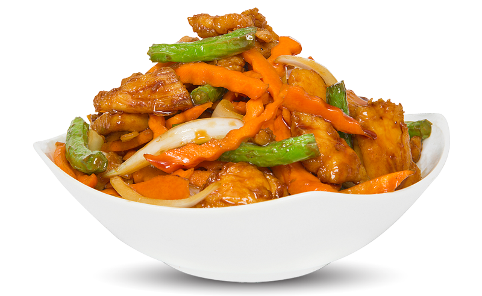
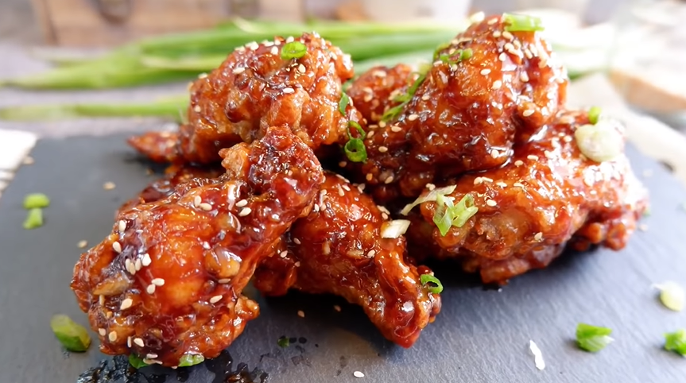
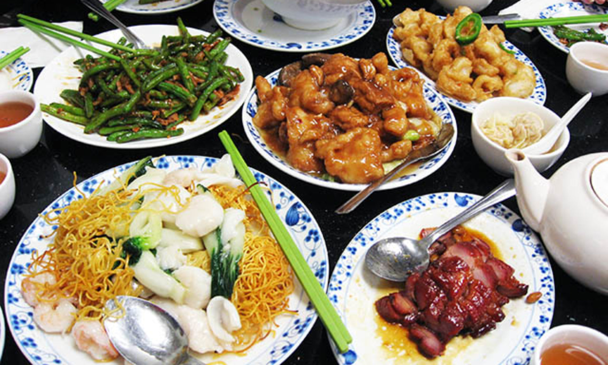
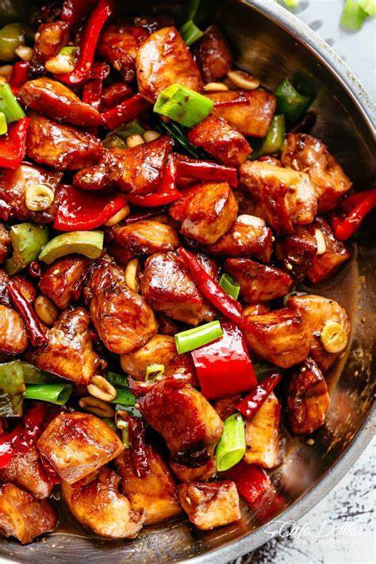

I belong To food
Sometimes I think To myself that I was born only to eat without eating I dont feel like breathing. I feel suffocated if i Dont eat well.
Food is life for me. I love different Cuisines specially Chineese.This cuisine is not only my heart beat but also of lot others who are food lover like me.



The Authentic Flavour, Sauces and Different spices Makes it very delicious and tasteful.
I Must say that everyTime I have chineese Food i never get agitated or anoyyed by it.
If Would say I can eat Chineese Food Everyday without any hesitation then that would not be wrong
Favourite Dishes
Sesame Chicken
Kung Pao Chicken

Closing Remarks
Food fills in colours in life
Let Food be the medicine and medicine be the food